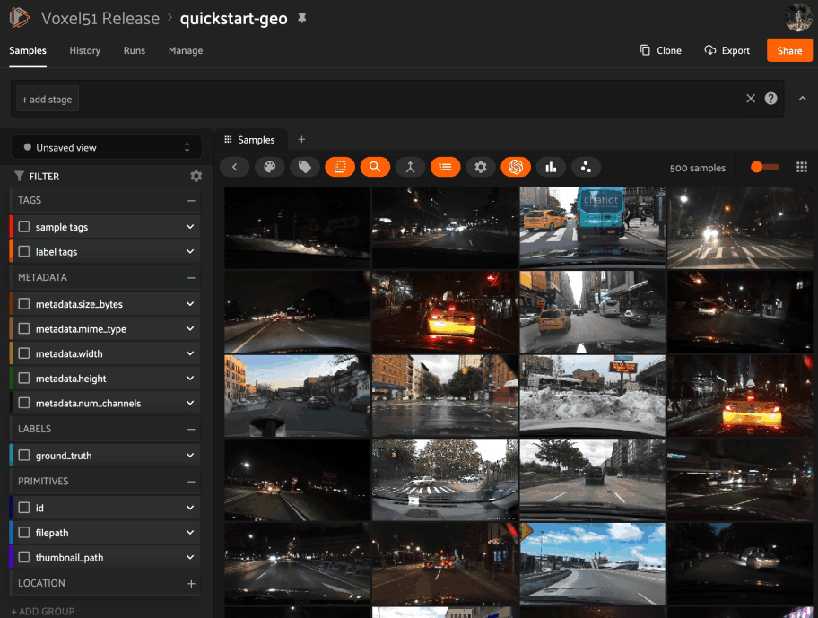

Plugins Overview¶
FiftyOne provides a powerful plugin framework that allows for extending and customizing the functionality of the tool to suit your specific needs.
With plugins, you can add new functionality to the FiftyOne App, create integrations with other tools and APIs, render custom panels, and add custom actions to menus.
With FiftyOne Teams, you can even write plugins that allow users to execute long-running tasks from within the App that run on a connected compute cluster.
Get started with plugins by installing some popular plugins, then try your hand at writing your own!
Note
Check out the FiftyOne plugins repository for a growing collection of plugins that you can easily download and use locally.
Getting started¶
What can plugins do for you? Get started by installing any of these plugins available in the FiftyOne Plugins repository:
✏️ Utilities for integrating FiftyOne with annotation tools |
|
ü߆ Utilities for working with the FiftyOne Brain |
|
üìä Create your own custom dashboards from within the App |
|
✅ Utilities for evaluating models with FiftyOne |
|
üìÅ A collection of import/export utilities |
|
üìà Utilities for working with FiftyOne database indexes |
|
üìà Utilities for working with custom runs |
|
⚒️ Call your favorite SDK utilities from the App |
|
ü§ñ An AI assistant that can query visual datasets, search the FiftyOne docs, and answer general computer vision questions |
|
üåé Download datasets and run inference with models from the FiftyOne Zoo, all without leaving the App |
For example, do you wish you could import data from within the App? With the @voxel51/io, plugin, you can!

Want to send data for annotation from within the App? Sure thing! Just install the @voxel51/annotation plugin:
Have model predictions on your dataset that you want to evaluate? The @voxel51/evaluation plugin makes it easy:

Need to compute embedding for your dataset? Kick off the task with the @voxel51/brain plugin and proceed with other work while the execution happens in the background:

Want to create a custom dashboard that displays statistics of interest about the current dataset? Just install the @voxel51/dashboard plugin and build away:
Note
When you choose delegated execution in the App, these tasks are automatically scheduled for execution on your connected orchestrator and you can continue with other work!
FiftyOne also includes a number of builtin features that are implemented as plugins. For example, Panels are miniature full-featured data applications that you can open in App Spaces and interactively manipulate to explore your dataset and update/respond to updates from other spaces that are currently open in the App.
Does your dataset have geolocation data? Use the Map panel to view it:

Want to visualize embeddings in the App? Just open the Embeddings panel:

Note
Look interesting? Learn how to develop your own plugins!